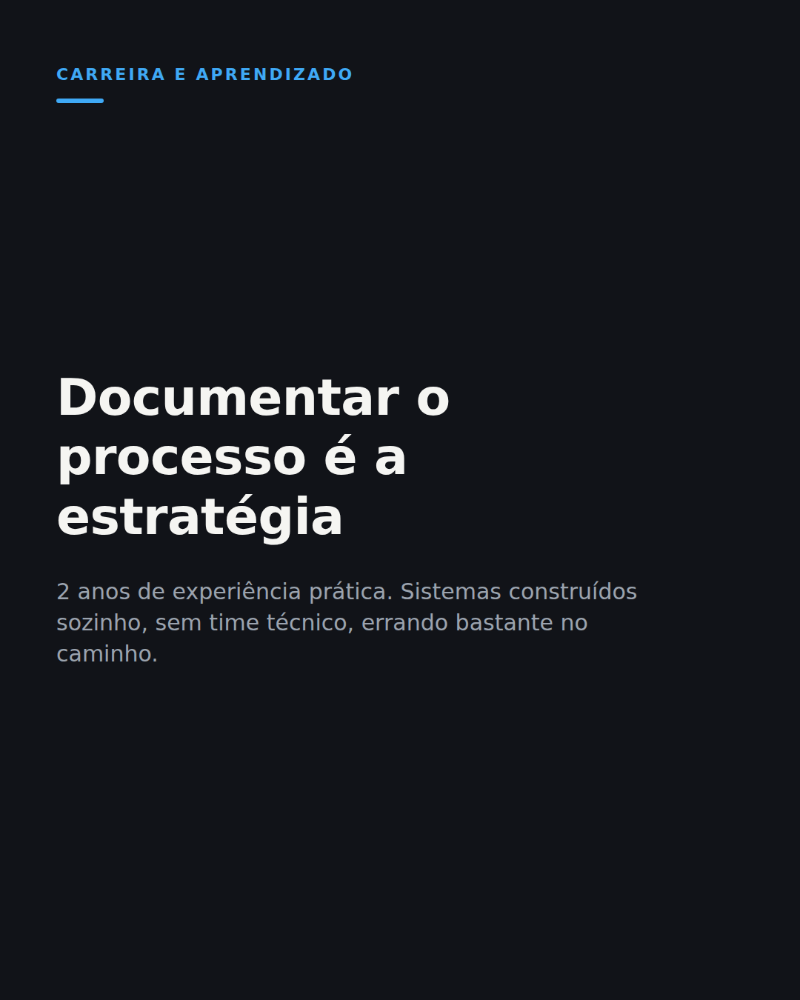

Onde eu quero chegar profissionalmente e por que decidi documentar o processo em público
1. Copie o texto
Sai relatório atrás de relatório de carreira em marketing mostrando que quem aplica IA na prática ganha um bônus salarial real sobre quem só usa ferramenta por cima do fluxo. Isso mudou a pergunta que ando me fazendo.
Não é mais "preciso aprender IA". É "pra que vaga eu quero estar pronto quando ela aparecer".
Tenho 2 anos de experiência prática e um monte de sistema construído sozinho, sem time técnico, sem curso de programação. Errei bastante no caminho e continuo errando.
A vaga que eu miro junta duas coisas que normalmente aparecem separadas: marketing de conteúdo de verdade e automação que resolve problema real, não ferramenta de IA decorativa em cima de um processo que já existia.
Documentar esse processo aqui, incluindo o que quebrou, é a forma que encontrei de mostrar isso antes de qualquer entrevista.
Não sei ainda qual vai ser o próximo passo exato. Sei que documentar em público é parte de como pretendo chegar lá.
Você documenta o processo em público ou só mostra quando já deu certo?
#carreira #marketingdigital #iamarketing
2. Baixe o visual

Baixar imagem